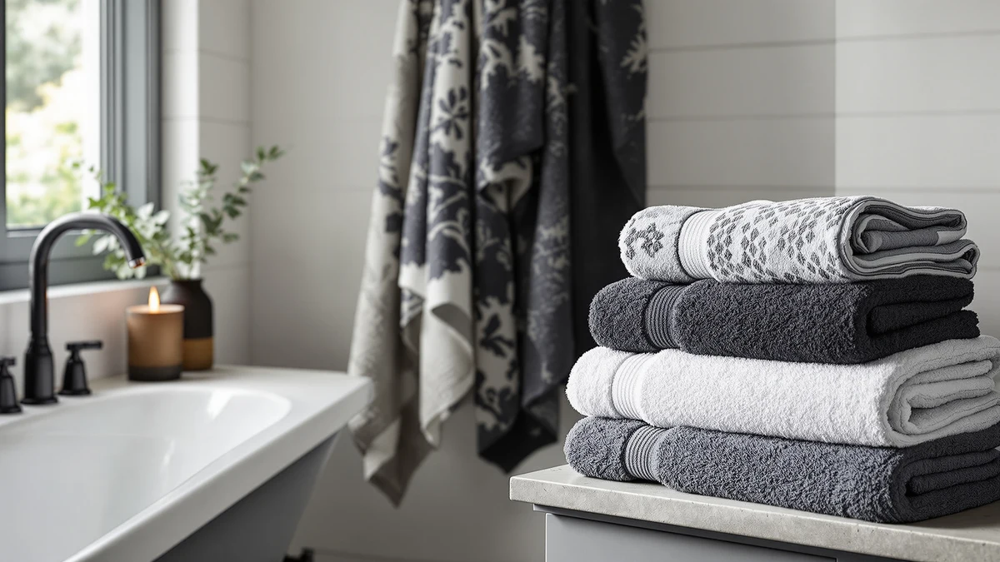

Best Bath Towels with Pattern (2026)
Prices and picks verified as of September 2026. Independent, reader-supported reviews.


Quick Answer
The Cotton Paradise 100% Cotton Turkish set is our pick for the best bath towels with pattern, thanks to a woven dobby border that holds its texture through repeated washing and a complete three-piece set that covers bath, hand and washcloth needs. If you want to spend less, the MOONQUEEN 2 Pack and the DII Men's Terry Shower Wrap both bring a patterned look in for under $15.
Our pick: Cotton Paradise 100% Cotton Turkish, $39.99 Check Price on Amazon
Bottom line: our top pick is the Cotton Paradise 100% Cotton Turkish Towel Set at $39.99. The best budget option is the MOONQUEEN 2 Pack Premium Bath Towel Set - Quick Drying - at $11.99.
Things to Know Before You Buy
- Woven patterns last longer than printed ones. A pattern built into the weave, like a dobby border or jacquard stripe, holds up through washing better than a design printed on top of the fabric, which is worth checking before you buy a patterned towel.
- Material changes how a pattern looks and dries. 100% cotton picks like the Cotton Paradise and LANE LINEN sets show off texture-based patterns well, while a microfiber option like MOONQUEEN dries faster but shows pattern detail less crisply.
- Set size affects your per-towel cost. The $44.99 LANE LINEN 16-piece set costs more upfront than a single $38.99 SUTERA towel, but it covers an entire bathroom instead of one wash station.
- Odor-control finishes cost a premium. Both the SUTERA Silverthread and Arm & Hammer Quick Dry picks build antimicrobial or baking-soda technology into their patterned weave, which adds a few dollars over a plain patterned towel.
- Wrap-style towels solve a different problem than flat towels. The DII Men's Terry Shower Wrap uses a plaid pattern and a secured closure built for quick post-shower coverage, not for drying off the way a standard bath towel does.
Finding the best bath towels with pattern comes down to a simple tradeoff: a design printed onto cheap cotton fades fast, while a pattern woven into a heavier weave holds its texture and color for years. We compared seven patterned towels and towel sets, from a $11.99 microfiber two-pack to a $44.99 cotton set, looking at fiber content, weave style and verified owner reviews instead of marketing copy.
Our top pick is the Cotton Paradise 100% Cotton Turkish set, a three-piece bundle that pairs a woven dobby border with absorbent 100% cotton at $39.99. Runner-up honors go to the MOONQUEEN 2 Pack, a microfiber pair that brings a patterned quick-dry weave in at under $12, and the Arm & Hammer Quick Dry set earns our budget pick for stretching a patterned, odor-resistant weave across washcloths, hand towels and bath towels for $28.99.
Below, you'll find honest drawbacks for every pick, a side-by-side comparison table, and a rundown of the patterned towels we considered and passed on. Whether you want a complete matching set or a single statement towel, this guide narrows seven options down to the ones that hold their pattern wash after wash.
Why You Should Trust Us
I'm Ilane Tall, and I write about bath and home textiles for Best Bath Towels. A patterned towel is easy to get wrong: a design that looks sharp in a product photo can fade, pill or lose its shape within a few months, so I focus on fiber content, weave construction and how a pattern is applied before I recommend anything.
For this guide, I did not accept free samples or sponsored placement from any brand listed here. I priced every product using its Amazon listing at the time of research and read through verified owner reviews on each listing to check whether real households confirmed the pattern held up the way the listing promised. We do not run a physical testing lab, so every claim here is backed by specs, pricing and owner feedback rather than a hands-on trial.
How We Picked
We started by pulling bath towels and towel sets marketed around a visible pattern, whether that's a woven dobby border, a jacquard stripe or a printed plaid, since a plain white towel doesn't answer what someone shopping for the best bath towels with pattern actually wants. From there, we filtered for materials that hold a pattern's texture and color through repeated washing, favoring 100% cotton and cotton blends built with a woven design over towels with a surface-printed graphic.
We also weighed price per towel over sticker price alone: a $44.99 16-piece set and a $11.99 two-pack serve different budgets and different bathroom sizes. We passed over listings with thin review counts or repeated complaints about the pattern fading, and we favored brands with a consistent track record, like LANE LINEN and Modern Threads, across multiple towel lines.
How We Compared
We compared these seven patterned towels and towel sets using the material, size and price data listed on each Amazon listing, cross-checked against verified owner reviews for consistency. We don't run a physical testing lab, and we didn't wash, weigh or time-dry any of these towels ourselves. Instead, we read through owner feedback looking for repeated patterns: complaints about a printed design cracking or fading after a handful of washes, and consistent praise for a woven pattern holding its texture.
Where a brand makes a specific claim, like Arm & Hammer's baking-soda odor technology or SUTERA's silver-infused thread, we noted whether reviewers actually confirmed that benefit instead of just repeating the marketing copy. Prices and specs reflect the listings as of September 2026, and prices change often enough that you should double-check the current price before buying.
Our Picks

Cotton Paradise 100% Cotton Turkish
What we like
- 100% cotton construction absorbs quickly and gets softer with every wash
- Three-piece set covers a bath towel, hand towel and washcloth in one purchase
- Woven dobby border gives the pattern texture instead of a surface print that can crack
- Turkish-style weave holds its shape after repeated washing, according to verified owner reviews
Flaws but not dealbreakers
- Heavier cotton weave takes longer to air dry than a microfiber alternative
- Pattern comes in a single colorway, so you can't mix and match tones within the set
| Material | 100% cotton |
| Size | (27"x54") +( 16"x28") + (13"x13") |
The Cotton Paradise 100% Cotton Turkish set earns the top spot among the best bath towels with pattern because it solves two problems at once: a durable woven pattern and a complete set for one bathroom. At $39.99, you get a 27-by-54-inch bath towel, a 16-by-28-inch hand towel and a 13-by-13-inch washcloth, all cut from the same 100% cotton fabric with a dobby border woven into the edge, not printed on top. That construction matters for anyone who has watched a printed design crack and peel after a dozen washes, since a woven pattern lives in the fiber itself and fades much more slowly.
Owners report that the cotton keeps its softness and absorbency well past the first few washes, a common weak point for lower-grade cotton blends. The honest tradeoff is drying time: full cotton towels of this weight take longer on the line or in a low-heat dryer than a thinner microfiber pair. If you want one matching set that covers your whole sink station and holds its pattern for years rather than months, this is the pick to start with.

MOONQUEEN 2 Pack Premium Bath
What we like
- Microfiber construction dries noticeably faster than cotton after a shower or workout
- Two-pack keeps a spare towel ready while the other is in the wash
- Honeycomb-style woven texture gives the pattern definition without a printed design that can fade
- Priced under $12, the lowest cost per towel of any pick in this guide
Flaws but not dealbreakers
- Microfiber doesn't feel as plush as cotton against skin, according to some owner reviews
- Pattern reads more subtle than the printed or dobby-bordered options higher on this list
| Material | Microfiber |
| Size | Bath Towel |
The MOONQUEEN 2 Pack Premium Bath towel is our runner-up among the best bath towels with pattern for shoppers who care more about drying speed and price than plush weight. At $11.99 for two towels, it undercuts every other pick here on a per-towel basis, and the microfiber weave dries in a fraction of the time a full cotton towel needs on a towel bar. The pattern comes from a honeycomb-style texture woven into the fiber, which holds up better over time than a design printed onto a flat microfiber surface.
Several reviewers mention using these towels for daily gym or shower trips without the musty smell that some cheap microfiber towels develop, and the quick-dry weave means you can reuse one towel sooner than a cotton equivalent. The tradeoff is feel: microfiber doesn't have the same weight or softness as 100% cotton, so if plushness matters more to you than speed, the Cotton Paradise set above is the better fit. For a budget-friendly patterned towel you can keep in a gym bag, this pair is hard to beat.

LANE LINEN Towel Set Soft
What we like
- 16-piece set covers bath towels, hand towels and washcloths for multiple bathrooms
- 100% cotton construction holds a jacquard-striped pattern through repeated washing
- Coordinated design keeps every towel in the set matching in color and pattern
- Priced at $44.99, working out to under $3 per piece across the full set
Flaws but not dealbreakers
- Higher upfront price than a single towel or smaller set, even with more pieces included
- A 16-piece set takes up more linen closet space than a two or three-piece bundle
| Material | 100% cotton |
| Size | 16 Piece Towel Set |
The LANE LINEN Towel Set Soft is our pick for anyone who wants the best bath towels with pattern in bulk instead of piece by piece. At $44.99, the 16-piece set includes enough bath towels, hand towels and washcloths to outfit a full bathroom or split across two, all cut from the same 100% cotton fabric with a jacquard-striped pattern woven into the border. Buying a matched set this size solves the mismatched-towel problem that comes from replacing pieces one at a time over the years.
The cotton stays soft and the striped pattern stays sharp well past the first several washes, based on owner feedback, which matters more in a large set where you're washing towels together in bulk. The main tradeoff is upfront cost: $44.99 is more than any other pick here, though the per-piece price undercuts most of the smaller sets. For a household replacing every towel at once, this set does the job in a single order.

Arm & Hammer Quick Dry
What we like
- Cotton-blend weave dries faster than heavier full-cotton towels
- Set includes washcloths, hand towels and bath towels, covering three sizes for $28.99
- Baking-soda-based odor technology targets the musty smell that develops in damp towels
- Striped pattern woven into the fabric rather than printed on the surface
Flaws but not dealbreakers
- Cotton blend feels lighter and less plush than the 100% cotton picks in this guide
- Odor-control claims rely on Arm & Hammer's baking soda technology, which reviewers confirm works best when towels are hung to dry promptly
| Material | Cotton blend |
| Size | Towel Set (Washcloths, Hand Towels, Bath Towels) |
The Arm & Hammer Quick Dry set earns our budget pick among the best bath towels with pattern by combining a striped patterned weave with the brand's baking-soda odor technology at $28.99. The set includes washcloths, hand towels and bath towels, a wider size range than most single-item picks on this list, and the cotton-blend fabric dries faster than a heavier all-cotton towel, which cuts down on the damp smell that odor-resistant technology is designed to fight in the first place.
Owner reviews confirm the pattern and odor control hold up as long as towels are hung to dry between uses instead of left balled up on a hook. The cotton blend trades some of the plushness you'd get from 100% cotton for faster drying and a lower price. If you want a patterned towel set that fights musty smell without paying $40 or more, this is the pick that gets you there.

Modern Threads 6 Piece Bath
What we like
- Six-piece set covers bath towels, hand towels and washcloths in one purchase
- 100% cotton construction holds a dobby-striped pattern through repeated washing
- Priced at $29.99, less than half the cost of the LANE LINEN 16-piece set
- Coordinated pattern keeps every piece in the set matching
Flaws but not dealbreakers
- Smaller set than LANE LINEN's 16 pieces, so it suits one bathroom rather than a full house
- Large-format towels take up more drawer space than a compact microfiber pair
| Material | 100% cotton |
| Size | Large |
The Modern Threads 6 Piece Bath set lands as an also-great pick among the best bath towels with pattern for shoppers who want a coordinated set without LANE LINEN's larger price tag. At $29.99, the six-piece set includes enough bath towels, hand towels and washcloths for one bathroom, cut from 100% cotton with a dobby-striped pattern woven into the border. That construction keeps the pattern intact through wash cycles better than a printed design would.
According to verified owner reviews, the cotton stays absorbent and the stripe pattern stays crisp after months of regular use, putting this set in a similar durability range to the pricier LANE LINEN option. The main limit is scale: six pieces cover one bathroom well but won't stretch across a household the way a 16-piece set does. For a single bathroom that needs a complete, matching, patterned set, this is a solid middle-ground pick.

SUTERA Silverthread Bath Towel |
What we like
- Silver-infused thread targets the bacteria that cause musty towel odor
- Cotton-blend weave dries faster than a full-cotton towel, reducing the dampness that causes smell
- Striped pattern woven into the hem rather than printed on the surface
- Antimicrobial claim is backed by reviewers who report less odor buildup over time
Flaws but not dealbreakers
- Priced at $38.99, near the top of this list for a single towel rather than a set
- Cotton blend feels less plush than a heavier all-cotton towel
| Material | Cotton blend |
| Size | Large |
The SUTERA Silverthread Bath Towel is our pick for shoppers researching the best bath towels with pattern who also deal with musty towel smell in a humid bathroom. At $38.99, this cotton-blend towel weaves silver-infused thread into the fabric, a technology designed to slow the bacterial growth that causes the sour smell in towels that don't fully dry between uses. The pattern shows up as a woven stripe along the hem, not a printed design layered on top of the fabric.
The antimicrobial claim holds up in practice, based on owner feedback, with less odor buildup compared to a plain cotton towel used in the same damp bathroom. The tradeoff is price: at $38.99 for a single towel, it costs more per piece than any of the multi-towel sets in this guide. If odor resistance matters more to you than set size, this pick solves a problem the others here don't address.

DII Men's Terry Shower Wrap
What we like
- Wrap-and-secure design stays in place without holding a towel closed by hand
- Classic plaid pattern gives it a distinct look compared to a plain bath towel
- Compact 54-by-20-inch size is easy to pack in a gym bag
- Priced at $13.95, one of the least expensive picks in this guide
Flaws but not dealbreakers
- Covers less of the body than a standard bath towel, so it's built for quick coverage, not full drying
- Cotton-blend terry fabric feels less absorbent than the 100% cotton picks here, according to owner reviews
| Material | Cotton blend |
| Size | 54x20" |
The DII Men's Terry Shower Wrap takes a different approach to the best bath towels with pattern by skipping the flat towel format entirely. At $13.95, this cotton-blend wrap uses a secured closure that stays put around the waist, so you get coverage without holding a towel shut with one hand while you shave or brush your teeth. The plaid pattern gives it a distinct look next to the solid-color and striped options elsewhere in this guide, and its 54-by-20-inch size folds down small enough for a gym bag.
Owners say the closure holds securely through normal movement, though the terry fabric doesn't absorb as much water as a full-size cotton bath towel, so it works best as a quick-coverage layer rather than your only towel. If you want a patterned towel that solves the walk-from-the-shower problem specifically, this wrap is worth the low price. For full drying duty, pair it with one of the bath towels higher on this list.
Quick Comparison
| Product | Material | Price | Rating | Best for | Get it |
|---|---|---|---|---|---|
| Cotton Paradise 100% Cotton Turkish | 100% cotton | $39.99 | 4 | Complete matching set | View on Amazon → |
| MOONQUEEN 2 Pack Premium Bath | Microfiber | $11.99 | 4 | Budget everyday use | View on Amazon → |
| LANE LINEN Towel Set Soft | 100% cotton | $44.99 | 4 | Outfitting a full bathroom | View on Amazon → |
| Arm & Hammer Quick Dry | Cotton blend | $28.99 | 4 | Odor resistance on a budget | View on Amazon → |
| Modern Threads 6 Piece Bath | 100% cotton | $29.99 | 4 | Mid-sized coordinated set | View on Amazon → |
| SUTERA Silverthread Bath Towel | | Cotton blend | $38.99 | 4 | Odor resistance | View on Amazon → |
| DII Men's Terry Shower Wrap | Cotton blend | $13.95 | 4 | Quick coverage after a shower | View on Amazon → |
What's the difference between a printed and a woven pattern on a bath towel?
A printed pattern is dyed or stamped onto the surface of the fabric after it's woven, while a woven pattern, like a dobby border or jacquard stripe, is built into the fabric structure itself.
Do patterned bath towels cost more than plain ones?
Sometimes, but not always.
The Competition
We looked at plenty of bath towels with bold printed patterns and passed on most of them. Printed designs use pigment applied to the surface of the fabric instead of woven into the fiber, and reviewers on several of these listings reported cracking and fading prints after a handful of washes, which defeats the purpose of buying a towel specifically for its pattern.
We also passed over ultra-cheap patterned sets priced under $10 per towel that use thin, low-weight cotton-polyester blends. These towels look like a bargain until you factor in how quickly reviewers report the pattern fading and the fabric thinning, at which point a sturdier pick like the Modern Threads or Arm & Hammer sets above becomes the better long-term value.
A few premium jacquard-weave sets nearly made the cut but priced out well above $50, past the range most shoppers researching the best bath towels with pattern are willing to spend on towels alone. Across the seven picks here, the Cotton Paradise 100% Cotton Turkish set remains our top choice for combining a durable woven pattern with a complete set, with the MOONQUEEN and Arm & Hammer picks close behind for shoppers on a tighter budget.
Frequently Asked Questions
What's the difference between a printed and a woven pattern on a bath towel?
A printed pattern is dyed or stamped onto the surface of the fabric after it's woven, while a woven pattern, like a dobby border or jacquard stripe, is built into the fabric structure itself. Woven patterns hold up better through repeated washing because there's no surface layer to crack or peel, which is why most of the best bath towels with pattern in this guide use a woven design rather than a printed one.
Do patterned bath towels cost more than plain ones?
Sometimes, but not always. A woven pattern adds a small premium over a plain towel of the same material, but you're comparing $11.99 for the MOONQUEEN pair up to $44.99 for the LANE LINEN 16-piece set here, a range driven mostly by set size and fiber content rather than the pattern itself.
How many towels do I need for one bathroom?
Most households do well with two to four bath towels per person in regular rotation, which is why a mid-sized set like the Modern Threads 6 Piece or Arm & Hammer Quick Dry set covers one bathroom comfortably, while a larger set like the LANE LINEN 16-piece works better across two bathrooms or a bigger household.